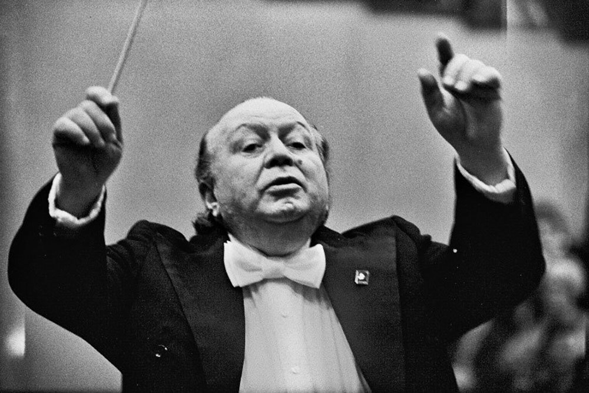

Натан Рахлин

Музыкант импровизационного и «чувственного» склада, был особенно убедителен в романтическом репертуаре[5]. Высшими его достижениями стали интерпретации «Фантастической симфонии» Г. Берлиоза, симфонических поэм Ф. Листа, 6-й симфонии, симфонии «Манфред», фантазии «Франчески да Римини» и последних симфоний П. И. Чайковского, «Пассакальи» И. Баха-А. Гедике, 9-й симфонии Л. ван Бетховена, симфоний А. Дворжака.
Первый исполнитель Одиннадцатой симфонии Д. Д. Шостаковича (1957), многих оркестровых произведений украинских (Б. Н. Лятошинского, К. Ф. Данькевича, Г. И. Майбороды, В. Б. Гомоляки, Г. П. Таранова, В. С. Косенко, Л. Н. Колодуба и др.) и татарских (Н. Г. Жиганова, А. З. Монасыпова, А. Б. Луппова и др.) композиторов.
В репертуаре важное место принадлежит сочинениям советский композиторов: Н. Я. Мясковского, Н. И. Пейко, Р. М. Глиэра, Ю. А. Шапорина, Д. Б. Кабалевского, Т. Н. Хренникова, Г. В. Свиридова, В. И. Мурадели, Я. А. Иванова и др.
Охотно прибегал к ретушам для достижения необходимого звукового результата. Особое значение дирижёр придавал тембровому единству групп в совместном звучании, что формировало характерный «органный» тон его оркестра.
Среди профессионалов восхищение вызывали феноменальная память дирижёра, доскональное знание и практические навыки игры на всех инструментах симфонического оркестра, исключительно пластичные выразительные руки и волевое воздействие на коллектив.
НС детства Натан учился в хедере, затем поступил в гимназию и одновременно – в Черниговское музыкальное училище. Революция и гражданская война прервали учебу, но зато в конце 1920 года подросток уже был трубачом в духовом оркестре дивизии Червонного казачества под командованием Котовского.
Натан Рахлин
По окончании обучения в Киеве был дирижёром первого симфонического оркестра на Радио в Харькове (1932—1934), работал в Куйбышеве (1934—1935), был инициатором создания, художественным руководителем и главным дирижёром симфонического оркестра в Сталинской филармонии (ныне Донецкая филармония) (1935—1937).
Натан Рахлин родился 28 декабря 1905 (10 января 1906) года в Сновске (ныне в Черниговской области Украины), в бедной еврейской семье.
В раннем детстве освоил скрипку, играл в клезмерском ансамбле, в семь лет стал работать музыкантом в местном кинотеатре. В начале 1920-х годов служил трубачом в РККА, в бригаде Г. Котовского, с 1922 — участник духового оркестра Высшей военной школы в Киеве.
В 1923—1927 годах учился в Киевской консерватории (ныне Национальная музыкальная академия Украины имени П. И. Чайковского) (класс скрипки Д. С. Бертье). В 1930 году окончил Высший музыкально-драматический институт им. Н. Лысенко (ныне Киевский национальный университет театра, кино и телевидения имени И. К. Карпенко-Карого) (класс дирижирования А. И. Орлова). В 1931—1935 годах заочно обучался музыкально-теоретическим предметам и композиции у М. О. Штейнберга (Ленинград). Также посещал высшие дирижёрские курсы в Харькове, где учился у Г. Б. Адлера[2].
Член ВКП(б) с 1947 года.
Жанна Дохорцева